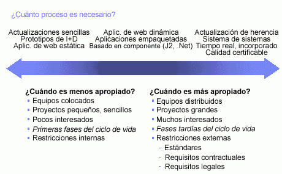

| Concepto: Adaptar el proceso |
 |
|
DiscusiónMás proceso, como el uso de más artefactos, la producción de documentación más detallada, el desarrollo y mantenimiento de más modelos que deben sincronizarse y más revisiones formales no es necesariamente una solución mejor. Por el contrario, se debe ajustar el tamaño del proceso a las necesidades del proyecto. A medida que crece el tamaño de un proyecto, se distribuye más, utiliza una tecnología más compleja, tiene un número mayor de interesados y necesita ajustarse a unos estándares de cumplimiento más riguroso, el proceso debe ser más disciplinado. Pero para proyectos más pequeños con equipos asignados en paralelo y tecnología conocida, el proceso debe ser más ligero. 
Factores que condicionan la cantidad de disciplina del proceso. Un proyecto debe adaptar la ceremonia del proceso a la fase del ciclo vital. Por una parte, al principio del proyecto nos enfrentamos a mucha incertidumbre y se debe favorecer con decisión la creatividad para el desarrollo de una aplicación que satisfaga las necesidades de la empresa. Suele ocurrir que cuanto más proceso haya, menos creatividad se produce, y no al revés; se debe por lo tanto minimizar el proceso en las fases iniciales de un proyecto en las que la incertidumbre es un factor diario. Más adelante, por el contrario, debemos incorporar más control, como los paneles de control de cambios, para evitar la creatividad no deseada y los riesgos que lleva asociados, que suelen conducir a la introducción de defectos en fases posteriores del proyecto: es decir, hace falta más proceso. Una empresa debe esforzarse por mejorar los procesos continuamente. Considere la realización de una valoración después de cada iteración y al final del proyecto para capturar las lecciones aprendidas y aprovechar ese conocimiento para la mejora del proceso. Anime a los miembros del equipo a que busquen continuamente oportunidades para la mejora. Finalmente, equilibrar los planes de proyecto y los cálculos estimados con la incertidumbre de un proyecto es fundamental. Es decir, en las fases iniciales de los proyectos, cuando la incertidumbre suele ser importante, los planes y los cálculos asociados se centran en los términos globales, en vez de proporcionar un buen nivel de precisión donde en realidad no hay ninguna concreción. Las actividades de desarrollo iniciales deben intentar ir eliminando la incertidumbre para habilitar gradualmente una mayor precisión en la planificación. |
© Copyright IBM Corp. 1987, 2006. Reservados todos los derechos. |